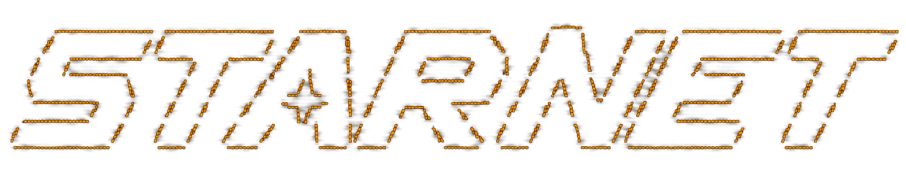

WINDOWS
Windows 10 / 11 · 64-bit
[ .EXE INSTALLER ]
Authenticode-signed. SmartScreen may still warn while the new certificate builds reputation: More info → Run anyway.

Give your AI a world to work in.
Recruit AI agents into a living pixel-art station on your machine, connect real tools and real models, and watch your workforce think, build, research, and solve — for your goals.
Recruit AI agents into a living simulation on your machine. Connect real tools and real models, then watch your workforce think, research, and build — the only limit is what you ask for.
You direct from COMMS. They think, browse, build files, and deliver — with your models, your keys, on your machine.
Windows and macOS installers, fully supported from day one. Builds publish on the releases page and update through the same verified feed. Current version: v0.6.8.
// honesty note: every build is cryptographically signed for auto-updates, and Windows installers are Authenticode code-signed. macOS builds aren't Apple-notarized yet, so Gatekeeper shows a one-time warning before first run; Windows SmartScreen may also warn until the signing certificate earns reputation. The getting-started guide shows exactly what to click on each platform. Something broken? Tell us: androo.agi@gmail.com.
GETTING STARTED PROVIDERS & KEYS THE STATION AGENTS & TEAMS NIGHT SHIFT SKILLS & ROUTINES CONNECTORS FROM OPENCLAW / HERMES TROUBLESHOOTING
The software is MIT-licensed open source and free to run. Model usage costs whatever your provider charges — you bring your own API key (or OAuth account), and StarNet shows you real cost per run. No markup, no subscription required to use your own keys. If you'd rather not manage keys at all, StarNet Credits are an optional managed plan — never required.
Yes — that's the whole point. Every agent run is a real model call with real tools; files get written, browsers get driven, and the ledger records real cost. The station never renders state the harness can't prove. If it looks like an agent is working, it is.
On your machine. Station state, transcripts, memory, and ledgers live in your local StarNet workspace. Requests go to your model provider only when an agent runs, and to the wider network only when you explicitly grant a network tool or connector.
A Windows or macOS machine and one model provider: an OpenRouter API key works everywhere, or use a supported OAuth sign-in. That's it — full power from minute one, nothing gated behind progression.
Windows installers are Authenticode code-signed; SmartScreen can still warn while a new certificate builds reputation. macOS builds aren't Apple-notarized yet, so Gatekeeper shows a one-time warning. The troubleshooting guide documents every warning honestly.